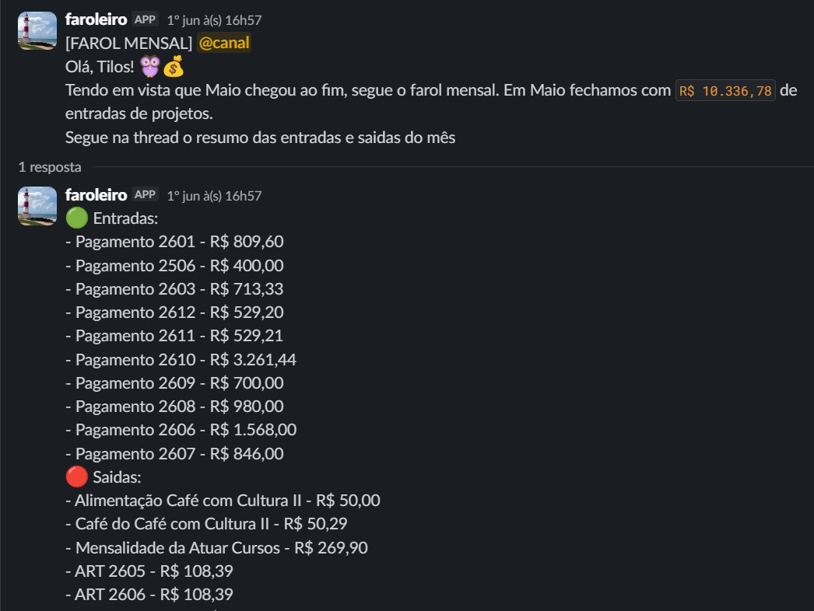
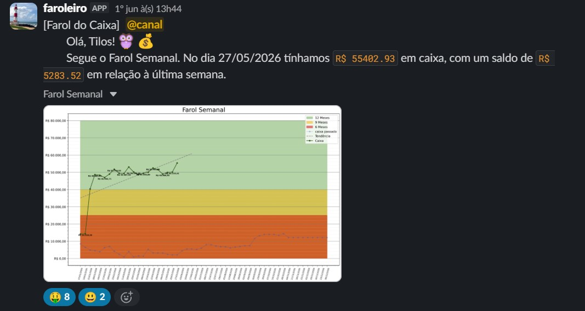

Farol de Caixa e Relatório Financeiro
Problema / motivação
Em minha atuação na empresa júnior de engenharia elétrica da UnB, ENETEC, uma das minhas incumbências estava no setor financeiro e, consequentemente, na transparência financeira da empresa, um processo bem desgastante e mecânico que, embora vital para a empresa, não gerava tantos resultados para a empresa em comparação com outras atividades exercidas na empresa.
Processo
Nesse cenário, optei por automatizar o processo utilizando a API do Google Sheets e do Slack para coletar os dados da planilha de fluxo de caixa, que já era atualizada semanalmente, e integrá-la ao canal de transparência financeira da empresa, para que ele enviasse relatórios semanais e mensais do caixa.
Resultado
O resultado é uma automação que opera até hoje no cotidiano da empresa, gerando uma economia significativa no tempo necessário para executar esse processo.
Imagens do projeto

